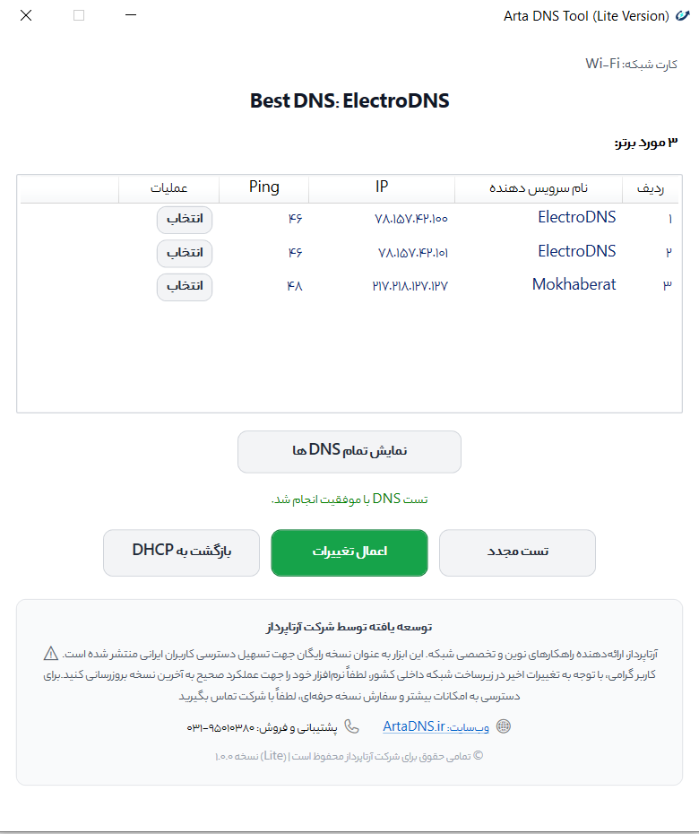

بهبود تجربه اتصال
کاهش تاخیر و پینگ در بازیهای آنلاین، رفع کندی اولیه در بارگذاری وبسایتها و جلوگیری از قطعیهای ناشی از DNSهای نامناسب اپراتورها.
با بهترین DNS برای خط شما
نرمافزار ArtaDNS با سنجش پینگ و کیفیت سرورهای مختلف DNS روی خط اختصاصی اینترنت شما، مناسبترین و پایدارترین گزینه را پیدا کرده و با یک کلیک فعال مینماید تا تجربهای روانتر در بازی، وبگردی و دانلود داشته باشید.

ابزاری سبک و کاربردی برای حل چالشهای روزمره اتصال به اینترنت و تنظیم آسان سرورهای نام دامنه
کاهش تاخیر و پینگ در بازیهای آنلاین، رفع کندی اولیه در بارگذاری وبسایتها و جلوگیری از قطعیهای ناشی از DNSهای نامناسب اپراتورها.
تست خودکار و پایش دقیق سرورهای معتبر DNS بر روی اتصال جاری شما برای کشف باثباتترین و سریعترین آدرس برای خط اینترنت شما.
محیطی فارسی، روان و کاملاً بدون پیچیدگی؛ تنظیم یا بازگردانی DNS بدون ورود به کنترلپنل ویندوز و فقط با فشردن یک کلیک.
پاسخگوی نیاز گیمرها، وبمسترها و برنامهنویسان و در عین حال راهحلی قابل استفاده برای اعضای خانواده و کاربران عمومی.
همه ابزارهای مورد نیاز برای انتخاب، تست و فعالسازی DNS در یک پنجره متمرکز و بهینه
مجموعهای از سرورهای معتبر داخلی و بینالمللی با امکان انتخاب یا بازنشانی سریع به حالت پیشفرض ویندوز.
مشاهده میزان تاخیر پاسخدهی هر سرور بر حسب میلیثانیه مستقیماً از خط و ارتباط فعلی شما.
طراحی بسیار سبک بدون پردازشهای پسزمینه مداوم و بدون تحمیل بار به سختافزار یا باتری دستگاه شما.
نرمافزار رایگان مدیریت DNS برای رایانههای شخصی
پس از دانلود، فایل را از حالت فشرده خارج کرده و نرمافزار را اجرا نمایید.
درک چگونگی عملکرد سامانه نام دامنه و تاثیر مستقیم آن بر تجربه کاربری شما
سامانه نام دامنه (Domain Name System) همانند دفترچه تلفن دنیای اینترنت عمل میکند. کامپیوترها نشانیهای عددی (IP) را متوجه میشوند و ما نامهای متنی (مانند example.com) را حفظ میکنیم. سرور DNS نام سایت را در کسری از ثانیه به IP مقصد ترجمه میکند تا دستگاه به آن متصل شود.
قبل از دانلود هر صفحه یا ارسال داده در یک بازی آنلاین، یک پرسوجوی DNS انجام میگیرد. اگر سرور DNS انتخابی شما دور یا شلوغ باشد، زمان انتظار اولیه برای هر اتصال بالا میرود. با انتخاب DNS نزدیکتر با پینگ پایینتر، تبادل دادهها با شتاب و پایداری بهتری آغاز میگردد.
سرورهای DNS استاندارد و شناختهشده، با جلوگیری از دستکاری و جعل درخواستها (DNS Hijacking) از هدایت اشتباه کاربر به صفحات نامعتبر پیشگیری میکنند. با این حال توجه داشته باشید که DNS یک فیلترشکن یا سیستم رمزنگاری دادهها نیست؛ بلکه ابزاری پایهای برای صحت و سرعت مسیریابی شبکه است.
پاسخ کوتاه به سوالاتی که ممکن است درباره استفاده از نرمافزار ArtaDNS داشته باشید
همین حالا نرمافزار ArtaDNS را به رایگان دریافت کرده و با یک کلیک بهترین سرور DNS را برای خط اینترنت خود تنظیم نمایید.
دانلود رایگان ArtaDNS برای ویندوز